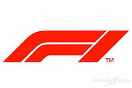
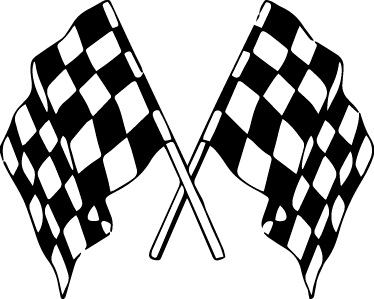

La Formula 1 y tambien denominada "La maxima categoria" o "Categoria reina del automovilismo" es la competicion de automovilismo internacional mas popular y prestigiosa. El inicio de la Formula-1 moderna se remonta al año 1950 (El primer Gran Premio se realizó el 13 de mayo de este mismo año en el circuito de Silverstone el cual fue ganado por el italiano Giuseppe Farina, consiguiendo además el campeonato de 1950 tras vencer a su compañero de equipo, el argentino Juan Manuel Fangio), en el que participaban escuderias como Ferrari, Alfa Romeo y Maserati; A las que mas adelante se sumarian McLaren, Williams, Lotus y Renaul, las cuales han alcanzado varias veces el Campeonato Mundial de Contructores
Los Grandes Premios:Cada año se organizan varios Grandes Premios en diferentes partes del mundo (En la temporada 2022 el número fue de 22 Grandes Premios por ejemplo). La competición se celebra los fines de semana.
♥ Viernes: El día viernes se realizan las pruebas libre (A exepcion de algunos GP donde se realiza una prueba libre y la clasificacion). Los equipos y pilotos usan los entrenamientos libres para adaptar el setup del coche (su configuración) con programas para mejorar el rendimiento del fin de semana, cada una de las sesiones dura una hora.
♥ Sabados: El sabado se destaca por ser el día de la clasificacion esta se divide en Q1(dura 18 minutos y se elimina alos ultimos 5 pilotos), la Q2 empieza con 15 pilotos ,es el mismos formato que antes solo que con 15 minutos, aqui tambien
♥ Domingo: Los domingos son los dias de carrera y de reconocimiento para los tres mejores en el podio
♥ Los volantes de F1 tienen hasta 20 botones.
♥ Un piloto de F1 pierde entre 5 y 4 kg por carrera.
♥ Un auto de F1 acelera de 0 a 160 km y vuelve a 0 en 4 segundos.
♥ Los discos de freno pueden alcanzar los 1000 grados.
♥ Cada monoplaza tiene 80.000 componentes ensamblados.
♥ La parada de pits más rapida se hizo en 1.82 segundos.
♥ La vida útil de un motor F1 es inferior a 5 carreras.
♥ El peso de un coche de Fórmula 1 no debe ser inferior a 728 kg sin combustible.
♥ Un conductor puede sobrevivir al impacto de 160 km para detenerse en 2 segundos
♥ Un monoplaza puede costar hasta 9 millones de euros
Equipos y pilotos 2023
La nueva era: Desde el 2014 se inserto la F1

Banderas
